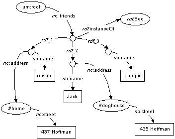
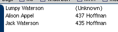

XUL Template Primer - Multiple Rules
Contents
OverviewExample
The
container and member attributesSelecting a Rule
Related Documents
Notes
Overview
This document expands on the
XUL Template Primer
by illustrating how multiple <rule> elements
can interact to create content using the extended XUL template
syntax.
Example
To illustrate how multiple <rule> elements
interact, we'll examine this
XUL document,
which builds a simple content model from an RDF/XML file.
As you can see, there are two <rule> elements
contained within the <template>.
We'll use the same RDF/XML that was used for the
bindings example,
friends.rdf.
This RDF/XML creates the following model.
When thrown together in Mozilla, the following appears:
Lumpy's street address is "unknown"! In this case, the first rule was matched twice: once for Alison and once for Jack, and the second rule (which has no constraints on one being landed gentry) matched once.
The container and member attributes
When more than one rule exists, the <template>
should specify a container and member
attribute.
These attributes specify which variables correspond to "containerhood" and "membership" in the rules that follow.
Each rule must use these variables consistently.
If these are not specified, then they will be deduced from the first rule.
Selecting a Rule
Even though more than one rule might match for a
particular container/member pair, only one rule is allowed to
actually build content. When this happens, the selection process
is simple: the first rule listed in
the <template> is chosen.
In our example, the second rule matches for both Alison and Jack; however, since the first rule also matches, it "masks" the second rule.
Related Documents
- XUL Template Primer
- XUL template basics.
- XUL Template Primer - Bindings
-
Illustrates how to use the
<bindings>tag in your XUL templates. - XUL Template Primer - Nested Content
- Illustrates how a template can be used recursively to build nested content.
- XUL Template Primer - Outliner
- Illustrates how a template can be used as a view for a XUL outliner.
- XUL Template Reference
- Describes the simple XUL template syntax in detail.